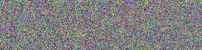
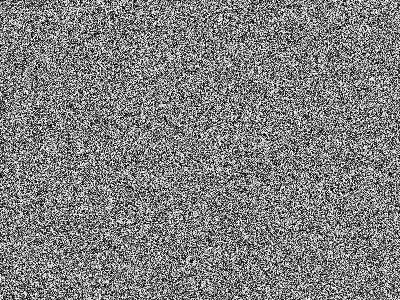

Conceptually, a byte is an integer ranging from 0 to 255. In all real-time graphic applications today, a pixel is typically represented by one byte per channel, though other representations are also possible.
An OpenCV image is a 2D or 3D array of the .array type. An 8-bit grayscale image is a 2D array containing byte values. A 24-bit BGR image is a 3D array, which also contains byte values. We may access these values by using an expression, such as image[0, 0] or image[0, 0, 0]. The first index is the pixel’s y coordinate or row, 0 being the top. The second index is the pixel’s x coordinate or column, 0 being the leftmost. The third index (if applicable) represents a color channel.
For example, in an 8-bit grayscale image with a white pixel in the upper-left corner, image[0, 0] is 255. For a 24-bit BGR image with a blue pixel in the upper-left corner, image[0, 0] is [255, 0, 0].
As an alternative to using an expression, such as image[0, 0] or image[0, 0] = 128, we may use an expression, such as image.item((0, 0)) or image.setitem((0, 0), 128). The latter expressions are more efficient for single-pixel operations. However, as we will see in subsequent chapters, we usually want to perform operations on large slices of an image rather than on single pixels.
Provided that an image has 8 bits per channel, we can cast it to a standard Python bytearray, which is one-dimensional:
byteArray = bytearray(image)
Conversely, provided that bytearray contains bytes in an appropriate order, we can cast and then reshape it to get a numpy.array type that is an image:
# Convert Gray Byte array to Gray image's dimension
grayImage = numpy.array( grayByteArray).reshape(height, width)
# Convert RBG Byte array to color image's dimension
bgrImage = numpy.array( bgrByteArray).reshape(height, width, 3)
Here 3 in reshape refers to 3rd dimension which contains color for that pixel.
As a more complete example, let’s convert bytearray, which contains random bytes to a grayscale image and a BGR image:
# Import Necessary libraries.
import cv2
import numpy
import os
# Make an array of 120,000 random bytes.
randomByteArray = bytearray(os.urandom(120000))
flatNumpyArray = numpy.array(randomByteArray)
# Convert the array to make a 400x300 grayscale image.
grayImage = flatNumpyArray.reshape(300, 400)
cv2.imwrite('RandomGray.png', grayImage)
# Convert the array to make a 400x100 color image.
bgrImage = flatNumpyArray.reshape(100, 400, 3)
cv2.imwrite('RandomColor.png', bgrImage)
After running this script, we should have a pair of randomly generated images, RandomGray.png and RandomColor.png, in the script’s directory.
The output should look like this :
 